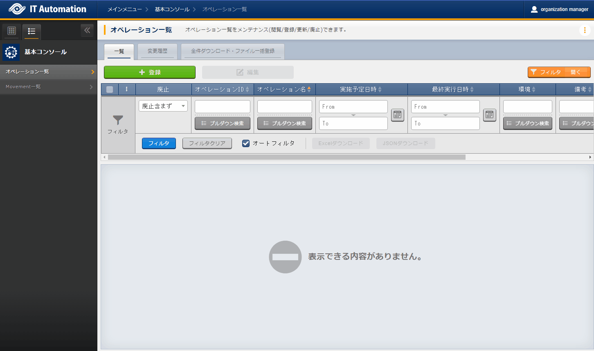

2.2. 基本コンソール¶
2.2.1. はじめに¶
本書は、ITAの基本コンソールの機能および操作方法について説明します。
2.2.2. ITA基本コンソールの概要¶
本章では基本コンソールメニューの機能、操作方法について説明します。
基本コンソールでは、ITAを利用して作業を行う上で共通に必要となる以下の機能を提供します。
2.2.3. ITA基本コンソールのメニュー、画面構成¶
本章では、ITA基本コンソールのメニュー、画面構成について説明します。
ITA基本コンソールメニュー 一覧¶
ITA共通/基本コンソールのメニューを以下に示します。
No |
メニューグループ |
メニュー画面 |
説明 |
|---|---|---|---|
1 |
ITA基本コンソール |
オペレーション一覧 |
投入オペレーション一覧をメンテナンス(閲覧/登録/更新/廃止)できます。 |
2 |
Movement一覧 |
登録したMovementの一覧を閲覧できます。 |
2.2.4. 機能・操作方法説明¶
ITA基本コンソール¶
オペレーション一覧¶
[オペレーション一覧]画面では、オーケストレータで実行する、作業対象ホストに対するオペレーションを管理します。
例）「サービス追加工事作業」 など+登録 より、オペレーション情報の登録を行います。
 図 2.1 登録画面（オペレーション一覧）¶
登録画面の項目一覧は以下のとおりです。
表 2.9 登録画面項目一覧（オペレーション一覧）¶ 項目
説明
入力必須
入力形式
制約事項
廃止
{{#1:「廃止」の説明内容の記入をお願い致します。}}
-
自動入力
オペレーションID
オペレーションを識別する一意のIDが自動入力されます。
-
自動入力
オペレーション名
任意のオペレーション名を登録します
○
手動入力
最大長256バイト
実施予定日時
オペレーションの実施予定日時を入力します
※ここで指定した日付で実際に処理が 実行されるわけではありません。
○
手動入力
最終実行日時
※実施予定日時が設定されているオペレーションに紐づく作業履歴は、指定した保存期間を過ぎると自動で削除されます。 Symphony実行や各ドライバの作業実行で、このオペレーションを選択し実行した実績の日時が表示されます。
-
表示項目
未実行のオペレーションの場合は空白が表示されます。
環境
{{#2:「環境」の説明内容の記入をお願い致します。}}
-
自動入力
備考
自由記述欄です。
-
手動入力
最終更新日時
{{#3:「最終更新日時」の説明内容の記入をお願い致します。}}
-
自動入力
最終更新者
{{#4:「最終更新者」の説明内容の記入をお願い致します。}}
-
自動入力
{kind=link}
Movement一覧¶
[Movement一覧]画面では、オーケストレータを利用する際のMovementとオーケストレータの関連付けを確認できます（参照のみ）。
注釈
Movementの実際の登録は、各Driverの利用手順マニュアルを参照し、各オーケストレータのITA用ドライバーのコンソールメニューから行ってください。
{kind=link}
図 2.2 サブメニュー画面（Movement一覧）¶